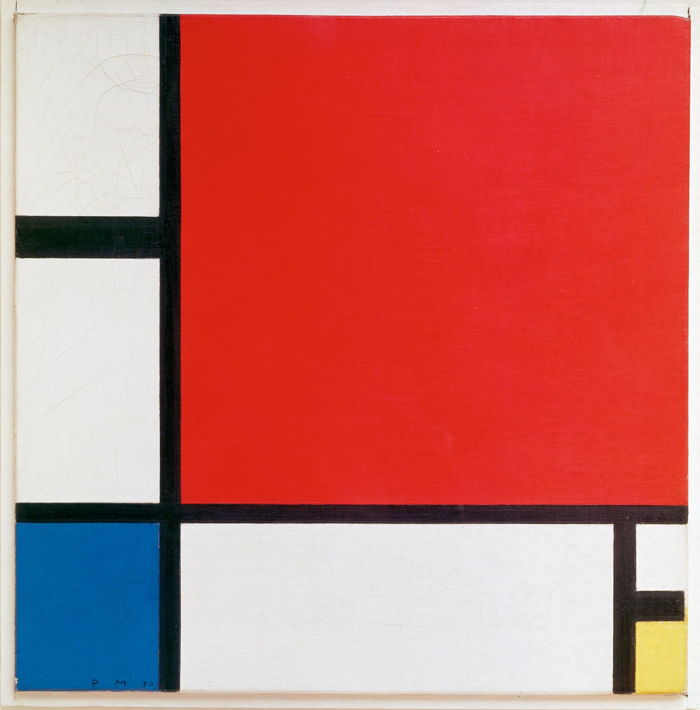

PORTFÓLIO DIGITAL • PRODUÇÕES
PINCEL DE CÓDIGO
Assim como um pintor utiliza pincéis e tintas, nesta atividade o código foi a ferramenta de criação. A obra abaixo é uma releitura de uma composição geométrica de Piet Mondrian, construída com exclusivamente HTML e CSS — nenhuma imagem pronta.
01 / OBRA DE REFERÊNCIA
A original

02 / A RELEITURA
A mesma composição em código
Figura 2 — Releitura criada com 6 elementos HTML e uma grade CSS. Passe o mouse sobre a obra.
03 — PROCESSO DE CONSTRUÇÃO
Como foi feito
A base da obra é uma grade CSS (display: grid)
com três colunas e três linhas em proporções diferentes. O fundo
preto do container aparece nas frestas da grade — ou seja,
as linhas pretas de Mondrian são apenas o espaçamento
entre as células.
.css-obra {
display: grid;
grid-template-columns: 0.95fr 4fr 1.1fr;
grid-template-rows: 1.15fr 1.55fr 1.15fr;
gap: 8px; /* as linhas pretas */
background: #0d0d0d;
aspect-ratio: 1 / 1;
}
.m-vermelho { grid-area: 1 / 2 / 3 / 4; } /* ocupa 2 linhas, 2 colunas */
.m-azul { grid-area: 3 / 1 / 4 / 2; }
Cada bloco de cor é uma <div> posicionada com
grid-area. O grande plano vermelho ocupa duas linhas e
duas colunas da grade; o azul fica na célula inferior esquerda; e o
canto amarelo é uma coluna flexível com um quadrado branco em cima.
A assinatura “P M 30” é apenas um <span> — uma
homenagem ao original.
A releitura mantém as proporções e as cores primárias da referência, mas foi adaptada às medidas da tela e ganhou um pequeno detalhe interativo: ao passar o mouse, cada plano responde com um leve realce de brilho, lembrando que, diferente da tinta, o código pode reagir.
04 — CÓDIGO COMO PINCEL
Regras cumpridas e reflexão
- Nenhuma imagem pronta foi usada na composição
- Toda a obra foi construída apenas com elementos HTML e CSS
- A obra original está apresentada apenas como referência
Reproduzir Mondrian com código mostrou que o HTML funciona como moldura e o CSS como pigmento: cada propriedade é uma decisão estética — proporção, cor, espaçamento. O resultado não precisa ser idêntico ao original: como uma releitura, ele preserva a linguagem geométrica do autor enquanto revela as possibilidades expressivas da própria ferramenta técnica.